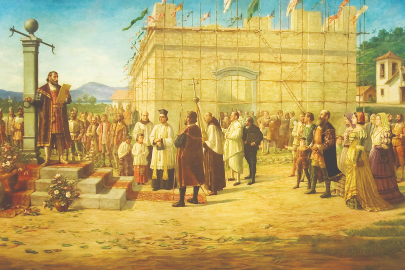
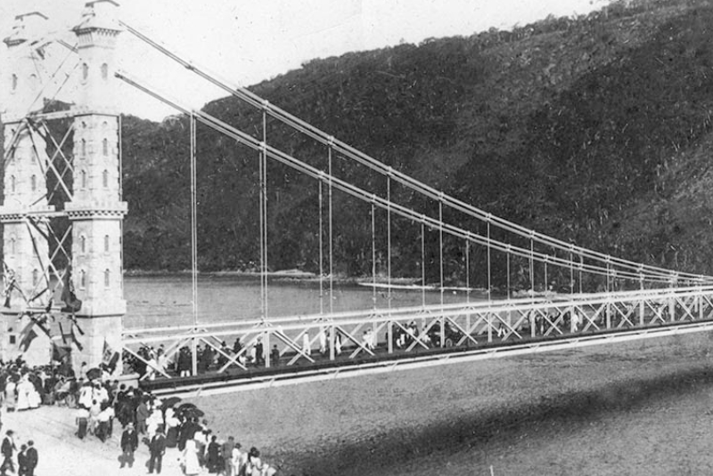
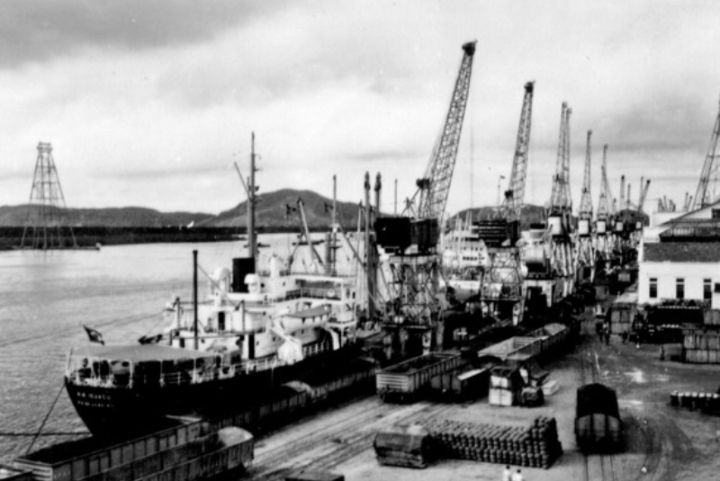
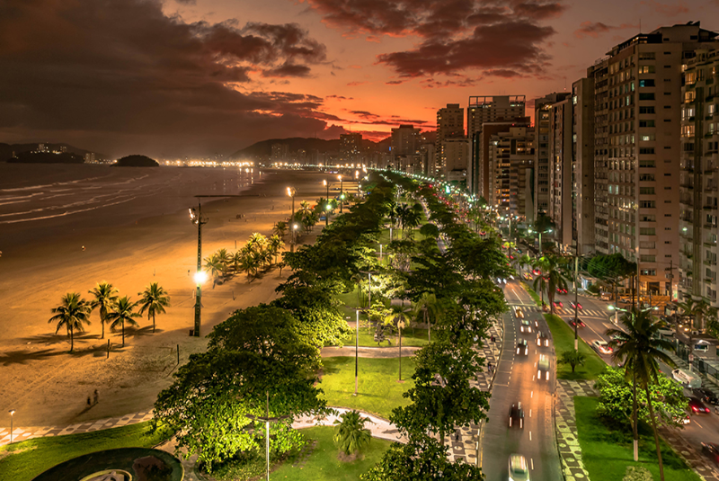

Da Fundação à Modernização
Santos, cidade com raízes desde 1540, é um tesouro histórico. Berço de figuras como os irmãos Andradas e José Bonifácio, destaca-se pela arquitetura colonial e seu encantador jardim à beira-mar. No século XVII, Santos enfrentou desafios marítimos, como ataques de piratas e conflitos com nações rivais, fortalecendo assim sua identidade. No século XIX , com a ascensão da indústria do café, Santos desempenhou um papel crucial na independência. Ao longo do século XX, a cidade superou obstáculos, como a modernização portuária, adaptando-se aos tempos modernos.
Pelé e a Glória no Futebol
Além do patrimônio histórico, Santos destaca-se no futebol pelo Santos Futebol Clube, fundado em 1912. Na década de 1960, viveu sua época dourada, com destaque mundial de Pelé, considerado o maior brasileiro de todos os tempos. O clube, além de títulos nacionais e internacionais, consolidou Santos como referência do futebol de excelência no Brasil. A influência de Pelé transcendeu fronteiras, tornando o Santos Futebol Clube símbolo de sucesso no cenário esportivo global.

Arquitetura de Santos
A rica história de Santos é entrelaçada com construções grandiosas, destacando-se os canais como uma engenhosa obra de drenagem de águas pluviais, solucionando problemas de alagamento e doenças. Adicionalmente, a lendária Ponte Pênsil, sendo um marco arquitetônico, conecta Ilha e Continente. Concebida por Saturnino de Brito, a ponte visava o escoamento sanitário da Ilha até Praia Grande. Com 180 metros sobre o Mar Pequeno, tornou-se símbolo do desenvolvimento urbano do Litoral Sul.

Porto de Santos
O Porto de Santos desempenhou papel crucial na exportação de açúcar durante o período colonial e, no século XIX, prosperou com a chegada da ferrovia. Hoje, o Porto de Santos é peça-chave na economia de Santos e do Brasil, sendo um dos maiores complexos portuários da América Latina. A constante modernização evidencia o compromisso de Santos em ser um polo logístico global. O porto representa a história e o futuro de Santos e do Brasil no cenário do comércio internacional.

Modernidade e Destaque Cultural
Hoje, Santos é um destino moderno e culturalmente vibrante, ocupando a 6ª posição no Índice de Desenvolvimento Humano (IDH) do Brasil. Iniciativas como a Linha Conheça Santos e o Bonde Turístico revitalizam o Centro Histórico, proporcionando uma experiência enriquecedora. Eventos culturais, festivais e museus, como o Museu Pelé e o Museu do Café, contribuem para a diversidade cultural e histórica de Santos, destacando-a não apenas como polo econômico e turístico, mas também como um relevante ponto cultural no cenário brasileiro.